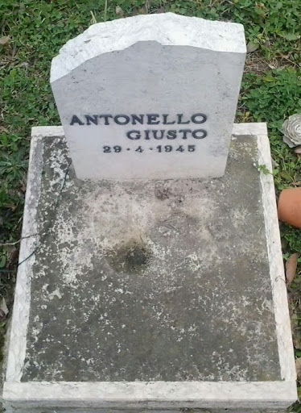

A San Martino di Lupari, poco fuori a via Vittorio Emanuele, il 29 aprile 1945, la colonna dei prigionieri tedeschi si avvia verso Nord. Subito dopo il passaggio a livello, uno degli ostaggi crolla a terra, non essendo più in grado di reggersi. I tedeschi lo finiscono sul posto e in seguito liberano due prigionieri. Ancora oggi sul luogo dell'esecuzione esiste una lapide a testimoniare l'evento.
